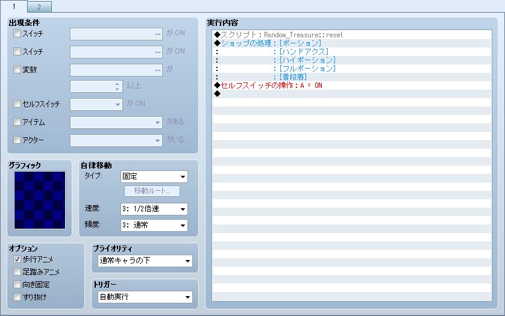
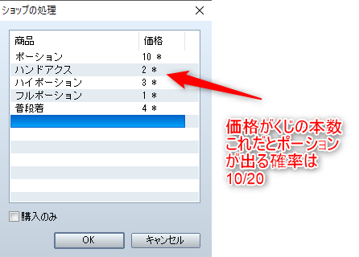
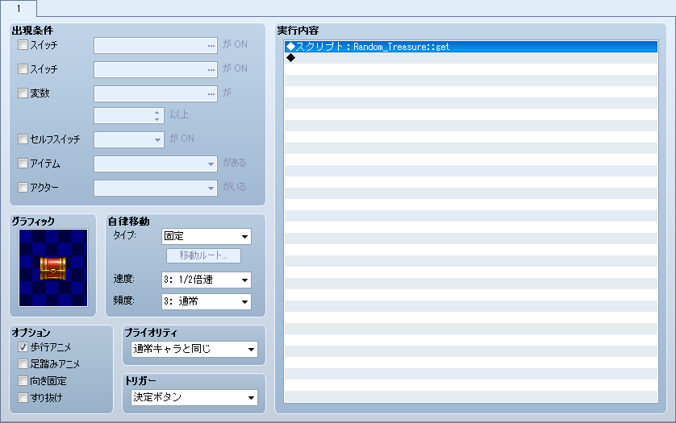

ランダムにアイテムを取得するスクリプト(VXAce版)
概要
仕様についてはMV版の記事を参照してください
導入方法
まず、スクリプトがこれ。
導入したら、スクリプトコマンドで Random_Treasure::reset を実行する。
このコマンド直後のショップ処理で登録したアイテムがランダムに手に入るアイテム群となる。ショップは開かれない。
アイテムごとの価格の設定がくじの本数となる。


そして、次に宝箱側の設定だ。スクリプトコマンドで Random_Treasure::get を実行するとランダムに1個手に入る。

入手したアイテムの表示方法
アイテム名格納変数とアイテムアイコン番号格納変数を用意した。
ここに変数番号を入れておくと、その番号の変数にアイテム名とアイコン番号が自動的に入る。
module RANDOMTREASURE
NAME_VAR = 10 #取得したアイテム名を格納する変数番号
ICON_VAR = 20 #取得したアイテムのアイコン番号を格納する変数番号
end
なので、これを使って、メッセージウィンドウに以下のように入力すれば入手したアイテムとアイコンが表示できる。
(変数番号は上記で指定した値)
\I[\V[20]] \V[10]を手に入れた
※ 入手インフォメーションスクリプトの インフォメーションfor RGSS3 Ver2.03-β に対応しています
DL先
ライセンス
Released under the MIT license